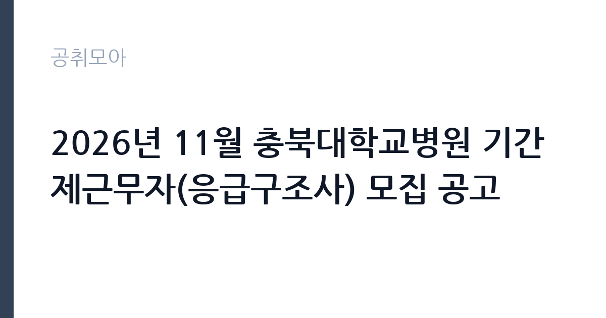

[공공기관] 2026년 11월 충북대학교병원 기간제근무자(응급구조사) 모집 공고
충북대학교병원 · 충북 · 마감 2026-11-18 (D-14) · 출처 잡알리오

한눈에 보는 모집 조건
| 기관 | 충북대학교병원 |
|---|---|
| 공고명 | 2026년 11월 충북대학교병원 기간제근무자(응급구조사) 모집 공고 |
| 고용형태 | 기간제 |
| 근무지 | 충북 |
| 게시일 | 2026-11-04 |
| 마감일 | 2026-11-18 (D-14) |
지원자격, 이렇게 읽으세요
- 공공기관 채용공시
- 세부 조건은 원문 공고문 확인
기간제 근로자는 근로계약 기간이 정해진 신분입니다. 계약 기간과 갱신 가능 여부가 근로계약서에 명시되며 기간 만료 시 근로관계가 종료됩니다. 결원 보충이나 특정 사업 기간에 맞춰 채용되는 경우가 많아 업무 범위가 명확합니다. 이번 공고는 충북대학교병원이 직접 진행하는 자체 전형입니다. 이 공고는 충북대학교병원 응급의학과의 기간제 응급구조사 1명을 뽑는 채용입니다. 응급구조사 자격이 필수이며 1급 또는 2급 가운데 어느 급수를 요구하는지 공고문에서 확인해야 합니다. 접수 마감은 2026년 11월 18일이고, 채용 분야별 세부 요건은 원문 공고문에 정리되어 있습니다. 기간제 채용이므로 계약 기간과 근무 시작일을 먼저 확인하십시오. 병원 근무이므로 건강검진과 감염 관리 교육 이수 절차가 따릅니다. 응시 자격 판단이 애매하면 접수 전에 채용 담당 부서로 문의하는 편이 안전합니다. 동일 직무 경력자와 경쟁하게 되므로, 관련 경험이 있다면 증명서에 업무 내용이 구체적으로 적히도록 요청하십시오. 응시 자격 판단이 애매하다면 접수 전에 채용 담당 부서로 문의하는 편이 안전합니다. 서류 제출 후에는 소명 기회가 없습니다.
이 공고의 포인트
이 건은 충북대학교병원이 같은 시기에 낸 2개 모집분야 가운데 응급구조사(응급의학과) 직무입니다. 다른 직무 공고와 요건이 다르므로 지원 전에 모집분야 표를 대조해야 합니다. 이 공고의 첫 번째 포인트는 고용 형태입니다. 계약 기간이 정해져 있어 근무 종료 시점이 명확합니다. 그만큼 짧은 기간에 어떤 실적을 남길지가 중요해집니다. 두 번째는 업무 범위가 명확하다는 점입니다. 응급구조사(응급의학과) 직무로 채용되므로 배치 이후 담당 업무가 크게 흔들리지 않습니다. 세 번째는 근무지입니다. 충북 지역 근무로 수도권 공고에 비해 지원자 분포가 넓지 않아 상대적으로 경쟁이 분산되는 경우가 있습니다. 처우와 근무 형태가 표로 정리되어 있어 비교해 보기에 편한 공고입니다. 선발 인원은 공고문에 명시되어 있으니 모집분야 항목을 함께 확인하십시오.
전형은 어떻게 진행되나
전형은 서류심사와 면접심사를 기본으로 하고 직무에 따라 필기나 실기, 체력검정이 추가됩니다. 서류 단계에서는 응시자격 충족 여부와 제출서류 형식을 확인하며 이 단계에서 탈락하는 지원자가 적지 않습니다. 면접은 직무 이해도와 경험을 확인하는 방식으로 진행되고 발표는 개별 통보나 홈페이지 게시로 이뤄집니다. 최종합격 이후에는 결격사유 조회와 채용 신체검사가 이어지며 이 절차에서 문제가 확인되면 합격이 취소될 수 있습니다. 구체적인 전형 단계와 배점은 공고문에 표로 정리되어 있으니 원문을 기준으로 준비하십시오. 자격증 취득 예정자로 지원했다면 취득 증명 제출 기한을 반드시 지켜야 합니다.
원문에서 확인한 전형 방식
- 응급구조사(응급의학과) 분야별 공고문 참고
이런 분께 추천해요
- 응급구조사 자격을 보유한 분
- 응급실 또는 구급 업무 경험이 있는 분
- 3교대 근무를 수행할 수 있는 분
지원 전 체크리스트
- 응시자격 요건과 경력 기준을 충족하는가 — 경력은 증명서로 입증해야 합니다
- 계약 기간과 근무 시작일·종료일을 확인했는가
- 제출서류 목록을 모두 준비했는가 — 누락 시 서류 단계에서 탈락합니다
- 접수 마감 2026-11-18 이전에 접수 방식을 확인해 제출했는가
모집 일정과 제출 타이밍
2026-11-04에 공고가 올라왔고 접수는 2026-11-18까지입니다. 남은 기간은 14일이며, 이 기간에 자격증 사본과 경력증명서, 주민등록등본 같은 기본 서류를 모두 준비해야 합니다. 경력증명서는 발급에 며칠이 걸리는 경우가 있으니 가장 먼저 신청하십시오. 접수는 온라인과 우편·방문으로 나뉘는 경우가 많고, 우편 접수는 도착 기준으로 판정되므로 마감일 소인만 믿으면 안 됩니다. 면접 일정은 서류 발표 후 개별 통보되므로 제출 후에도 연락을 받을 수 있도록 유지해야 합니다. 임용 예정일이 빠르게 잡히는 공고이므로 현재 일정과 겹치지 않는지 미리 확인하십시오.
직무 이해하기: 공공기관
충북대학교병원 응급의학과 응급구조사는 응급실에서 환자 처치를 지원합니다. 환자가 도착하면 활력징후를 확인하고 중증도를 분류해 담당 의료진에게 인계합니다. 심폐소생술과 산소 투여, 정맥로 확보 보조, 검사물 이송 같은 처치를 수행합니다. 구급차 이송 환자의 인수인계와 기록 작성도 업무에 포함됩니다. 3교대 근무로 운영되며 야간과 휴일 근무가 있습니다. 업무 강도와 근무 시간대는 부서 배치에 따라 달라지므로 면접에서 확인하는 것이 가장 정확합니다.
자기소개서 작성 팁
지원서는 응급구조사 경력을 근무 병원과 처치 범위로 정리하는 것이 핵심입니다. 근무 기간과 응급실 규모, 수행한 처치 종류를 구체적으로 쓰십시오. 중증 환자 대응에서 판단이 갈렸던 사례를 본인이 어떻게 정리했는지 서술하면 설득력이 높아집니다. 기간제라는 조건을 인정하고 근무 기간 동안 응급실 인력 공백을 메우겠다는 의지를 밝히십시오. 문항별 글자 수 제한을 먼저 확인하고, 각 문항의 첫 문장에 결론을 배치하는 방식이 읽기 쉽습니다. 지원 동기는 기관의 어떤 사업에 기여하겠다는 한 문장으로 시작하고, 이어서 본인의 경험을 근거로 붙이십시오. 감점을 피하려면 다른 기관에 보낼 수 있는 범용 문장을 그대로 쓰지 않는 것이 중요합니다. 기관 이름과 사업명이 문장 안에 자연스럽게 들어가야 준비도가 드러납니다.
면접 준비 포인트
면접에서는 응급 처치 실무와 우선순위 판단을 확인합니다. 중증 환자가 동시에 여러 명 도착했을 때 어떻게 분류할지, 인수인계에서 놓친 정보를 발견하면 어떻게 처리할지 묻습니다. 실제 근무했던 응급실 규모와 담당 업무를 구체적으로 답하십시오. 교대 근무 적응과 야간 근무 가능 여부도 확인 대상입니다. 답변 시간이 짧게 정해져 있는 경우가 있으므로 핵심 문장을 먼저 말하고 근거를 붙이는 방식이 유리합니다. 면접 당일 신분증과 제출서류 원본을 요구하는 경우가 있으니 공고문의 준비물 목록을 확인하십시오.
급여·근무조건 읽는 법
충북대학교병원은 국립대학병원으로 자체 임금 규정을 적용합니다. 기간제 응급구조사는 병원의 기간제 임금 기준과 경력 인정에 따라 보수가 정해지고, 3교대 근무수당이 붙으면 실수령액이 달라집니다. 계약 기간과 월 급여를 함께 확인해야 총액을 알 수 있으며, 구체적인 금액은 공고문 처우 항목에서 확인하십시오. 2026년 적용 최저임금은 시급 10,320원, 월 환산 2,156,880원(주 40시간·209시간 기준)입니다. 고용노동부 고시 제2025-47호로 확정된 금액입니다. 공고문에 금액이 제시되지 않은 항목은 원문 보수표나 처우 설명에서 확인해야 하며 확인되지 않은 수치는 쓰지 않는 것이 원칙입니다. 비교할 때는 월 급여뿐 아니라 상여·명절휴가비·복지포인트·초과근무수당까지 포함한 연간 총액으로 계산하십시오. 기간제라면 계약 기간 동안의 총액을, 무기계약이라면 호봉 상승과 정년까지의 누적 소득을 기준으로 판단하는 편이 정확합니다.
자주 묻는 질문
- 선발 인원은 몇 명인가요?
공고문의 모집분야 항목에 직종별 인원이 표로 제시되어 있습니다. 첨부된 공고문 원문에서 확인하십시오. - 근무지는 어디인가요?
충북 지역의 충북대학교병원 소속 근무지입니다. 세부 주소와 출퇴근 조건은 원문 공고문에서 확인할 수 있습니다. - 보수는 얼마인가요?
채용 신분(기간제)과 기관 임금 규정에 따라 정해지며 구체적인 금액은 공고문 처우 항목에 제시됩니다. 금액이 공개되지 않은 경우에는 원문의 보수표를 확인하십시오.
함께 보면 좋은 공고
[공공기관] 한국농어촌공사 영산강사업단 공무직(청소원) 보훈 장애 제한경쟁 채용공고 — 마감 2026-11-20[공공기관] 2027년 1차 박사후연수연구원, 석사후연수연구원 및 위촉연구원 공개채용 — 마감 2026-11-20[공공기관] 서울대학교치과병원 2027년 상반기 정규직(원무직) 채용 공고 — 마감 2026-11-18출처: 잡알리오 공개정보를 바탕으로 공취모아가 정리한 안내글입니다. 모집 조건·일정은 변경될 수 있으니 지원 전 반드시 원문 공고문을 확인하세요. 본 글은 정보 제공용이며 합격을 보장하지 않습니다.